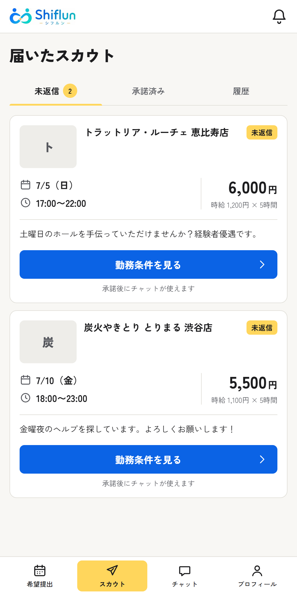
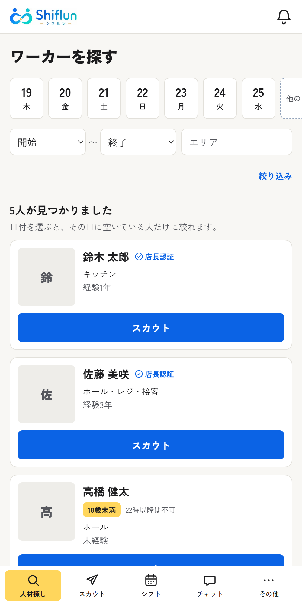
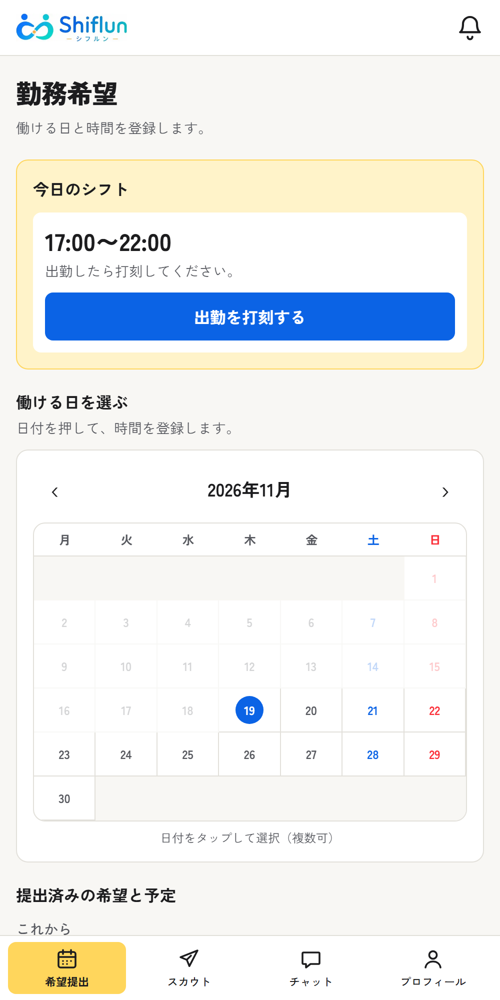

<title>Shiflun 開発ポートフォリオ</title>
<meta name="claude:viewport-fit-sides" content="cover">
<link rel="preconnect" href="https://fonts.googleapis.com">
<link rel="preconnect" href="https://fonts.gstatic.com" crossorigin>
<link rel="stylesheet" href="https://fonts.googleapis.com/css2?family=Zen+Kaku+Gothic+New:wght@500;700;900&family=Noto+Sans+JP:wght@400;500;700&family=JetBrains+Mono:wght@400;600&display=swap">
<style>
/* Layout: 1カラムの読み物。左に細い時刻レール（シフト表の時間軸）を見立てた見出しラベル。画面スクショは端末フレームで並べる */
:root {
  --bg: #f7f6f2;
  --surface: #ffffff;
  --fg: #1b1d22;
  --muted: #5f6470;
  --line: #e3e2dc;
  --accent: #0d66e0;
  --accent-soft: #e6effc;
  --sky: #b07800;
  --warn-bg: #fff6dc;
  --warn-fg: #7a5a00;
  --font-display: "Zen Kaku Gothic New", "Hiragino Sans", "Yu Gothic", sans-serif;
  --font-body: "Noto Sans JP", "Hiragino Sans", "Yu Gothic", sans-serif;
  --font-mono: "JetBrains Mono", ui-monospace, "Cascadia Mono", monospace;
}
@media (prefers-color-scheme: dark) {
  :root:not([data-theme="light"]) {
    --bg: #131417; --surface: #1c1e23; --fg: #eceef2; --muted: #a0a6b2; --line: #2e3138;
    --accent: #6aa6ff; --accent-soft: #1b2a44; --sky: #ffd257; --warn-bg: #3a3014; --warn-fg: #f1d27a;
    color-scheme: dark;
  }
}
:root[data-theme="dark"] {
  --bg: #131417; --surface: #1c1e23; --fg: #eceef2; --muted: #a0a6b2; --line: #2e3138;
  --accent: #6aa6ff; --accent-soft: #1b2a44; --sky: #ffd257; --warn-bg: #3a3014; --warn-fg: #f1d27a;
  color-scheme: dark;
}
* { box-sizing: border-box; }
body {
  background: var(--bg); color: var(--fg);
  font-family: var(--font-body); font-size: 16px; line-height: 1.85;
  padding-left: max(16px, env(safe-area-inset-left, 0px));
  padding-right: max(16px, env(safe-area-inset-right, 0px));
}
.wrap { max-width: 880px; margin: 0 auto; padding-block: 56px 80px; display: grid; gap: 72px; }
h1, h2, h3 { font-family: var(--font-display); text-wrap: balance; margin: 0; line-height: 1.35; }
p { margin: 0; }
.label {
  font-family: var(--font-mono); font-size: 12px; letter-spacing: .08em; color: var(--accent);
  display: flex; align-items: center; gap: 10px; text-transform: uppercase;
}
.label::after { content: ""; flex: 1; height: 1px; background: var(--line); }
section { display: grid; gap: 20px; }
h2 { font-size: 26px; font-weight: 700; }
.lead { color: var(--muted); max-width: 40em; }

/* hero */
.hero { display: grid; gap: 22px; }
.brand { display: flex; align-items: baseline; gap: 12px; flex-wrap: wrap; }
.brand h1 { font-size: clamp(40px, 8vw, 60px); font-weight: 900; letter-spacing: -.01em; }
.brand .kana { font-family: var(--font-display); color: var(--muted); font-size: 18px; }
.tagline { font-family: var(--font-display); font-size: clamp(20px, 3.4vw, 26px); font-weight: 700; max-width: 26em; }
.tagline em { font-style: normal; color: var(--accent); }
.meta { display: flex; flex-wrap: wrap; gap: 8px 22px; font-size: 14px; color: var(--muted); }
.meta b { color: var(--fg); font-weight: 500; }
.todo { background: var(--warn-bg); color: var(--warn-fg); padding: 0 8px; border-radius: 4px; font-weight: 500; }
.notice {
  font-size: 14px; color: var(--muted); border: 1px dashed var(--line); border-radius: 10px;
  padding: 12px 16px; display: grid; gap: 4px;
}
.notice b { color: var(--fg); font-weight: 500; }

/* problem / solution */
.ps { display: grid; grid-template-columns: repeat(auto-fit, minmax(260px, 1fr)); gap: 16px; }
.ps > div { background: var(--surface); border: 1px solid var(--line); border-radius: 12px; padding: 20px 22px; display: grid; gap: 8px; align-content: start; min-width: 0; }
.ps h3 { font-size: 17px; }
.ps .tag { font-family: var(--font-mono); font-size: 12px; color: var(--muted); }

/* screens */
.screens { display: grid; grid-template-columns: repeat(auto-fit, minmax(220px, 1fr)); gap: 24px; }
figure { margin: 0; display: grid; gap: 12px; align-content: start; min-width: 0; }
.phone {
  background: var(--surface); border: 1px solid var(--line); border-radius: 22px; padding: 10px;
  box-shadow: 0 12px 30px -18px rgba(13, 50, 110, .35); max-width: 300px; width: 100%; justify-self: center;
}
.phone img { display: block; width: 100%; border-radius: 14px; }
figcaption { font-size: 14px; color: var(--muted); max-width: 300px; justify-self: center; }
figcaption b { color: var(--fg); display: block; font-family: var(--font-display); font-size: 16px; }

/* flow: シフトの1日の流れ */
.flow { list-style: none; margin: 0; padding: 0; display: grid; gap: 0; counter-reset: step; }
.flow li {
  counter-increment: step; display: grid; grid-template-columns: 56px 1fr; gap: 16px;
  padding-block: 14px; border-top: 1px solid var(--line);
}
.flow li:last-child { border-bottom: 1px solid var(--line); }
.flow li::before {
  content: counter(step, decimal-leading-zero); font-family: var(--font-mono); font-weight: 600;
  color: var(--accent); font-size: 15px; padding-top: 2px;
}
.flow .who { font-family: var(--font-mono); font-size: 11px; letter-spacing: .06em; padding: 1px 7px; border-radius: 999px; margin-right: 8px; vertical-align: 2px; }
.who.w { background: var(--accent-soft); color: var(--accent); }
.who.s { background: color-mix(in srgb, var(--sky) 18%, transparent); color: var(--sky); }
.who.db { background: var(--line); color: var(--muted); }
.flow small { display: block; color: var(--muted); font-size: 13.5px; }

/* stack */
.stack { display: grid; grid-template-columns: repeat(auto-fit, minmax(200px, 1fr)); gap: 1px; background: var(--line); border: 1px solid var(--line); border-radius: 12px; overflow: hidden; }
.stack div { background: var(--surface); padding: 14px 18px; display: grid; gap: 2px; min-width: 0; }
.stack .k { font-family: var(--font-mono); font-size: 11px; color: var(--muted); letter-spacing: .06em; }
.stack .v { font-weight: 500; }

/* highlights */
.hl { display: grid; gap: 28px; }
.hl article { display: grid; gap: 8px; }
.hl h3 { font-size: 19px; }
.hl p { max-width: 42em; }
.hl .why { color: var(--muted); font-size: 14.5px; }
code { font-family: var(--font-mono); font-size: .88em; background: var(--accent-soft); color: var(--accent); padding: 1px 6px; border-radius: 4px; }

/* numbers */
.nums { display: grid; grid-template-columns: repeat(auto-fit, minmax(150px, 1fr)); gap: 16px; }
.nums div { display: grid; gap: 2px; }
.nums .n { font-family: var(--font-mono); font-size: 34px; font-weight: 600; font-variant-numeric: tabular-nums; color: var(--accent); line-height: 1.2; }
.nums .u { font-size: 14px; color: var(--muted); }

/* timeline */
.tl { display: grid; gap: 0; }
.tl div { display: grid; grid-template-columns: 92px 1fr; gap: 16px; padding-block: 10px; border-top: 1px solid var(--line); }
.tl div:last-child { border-bottom: 1px solid var(--line); }
.tl .m { font-family: var(--font-mono); font-size: 13px; color: var(--muted); padding-top: 3px; font-variant-numeric: tabular-nums; }

footer { font-size: 14px; color: var(--muted); display: grid; gap: 6px; }

@media (max-width: 480px) {
  .wrap { padding-block: 32px 56px; gap: 56px; }
  .flow li { grid-template-columns: 40px 1fr; gap: 10px; }
  .tl div { grid-template-columns: 74px 1fr; gap: 10px; }
}
</style>

<main class="wrap">

  <header class="hero">
    <div class="label">Portfolio · Web（iOS / Android は2027年1月予定）</div>
    <div class="brand"><h1>Shiflun</h1><span class="kana">シフルン</span></div>
    <p class="tagline">飲食店バイトの「入れなかったシフト」を、<em>近くの別のお店からのスカウト</em>につなげるサービス。</p>
    <div class="meta">
      <span>期間 <b>2026年6月〜開発中</b></span>
    </div>
    <div class="notice">
      <span><b>このページは2026年11月時点の内容をまとめたものです。</b></span>
      <span>掲載している画面はすべて開発用のデモデータで、店名・人名は架空です。実際の利用者のデータは含みません。ソースコードと本番環境は公開していないため、面接の場で画面共有してお見せできます。</span>
    </div>
  </header>

  <section>
    <div class="label">Problem</div>
    <h2>人手が足りない店と、働き足りないバイトがいる</h2>
    <div class="ps">
      <div>
        <span class="tag">お店の悩み</span>
        <h3>急に人が足りない日がある</h3>
        <p>求人を出しても、経験があるかどうかは会ってみるまで分からない。</p>
      </div>
      <div>
        <span class="tag">バイトの悩み</span>
        <h3>希望を出してもシフトに入れない</h3>
        <p>働ける時間はあるのに、今の店では枠が埋まっている。</p>
      </div>
      <div>
        <span class="tag">Shiflun の答え</span>
        <h3>シフト管理の延長でマッチング</h3>
        <p>店で採用されなかった時間帯だけを近くの店に開放し、今の店長が「この人は実際に働いている」と認証した人をスカウトできるようにしました。</p>
      </div>
    </div>
  </section>

  <section>
    <div class="label">Screens</div>
    <h2>主な画面</h2>
    <div class="screens">
      <figure>
        <div class="phone"></div>
        <figcaption><b>ワーカー：届いたスカウト</b>日時・給与・お店からのメッセージが一目で分かります。承諾すると勤務予定とチャットが自動で作られます。</figcaption>
      </figure>
      <figure>
        <div class="phone"></div>
        <figcaption><b>お店：ワーカーを探す</b>日付・時間帯・エリアで検索し、店長認証バッジや経験年数を見てスカウトします。18歳未満の人には「22時以降は不可」と表示されます。</figcaption>
      </figure>
      <figure>
        <div class="phone"></div>
        <figcaption><b>ワーカー：勤務希望と出勤打刻</b>カレンダーで働ける日を選んで提出します。当日は同じ画面から出勤を打刻できます。</figcaption>
      </figure>
    </div>
  </section>

  <section>
    <div class="label">How it works</div>
    <h2>シフト希望から支払い記録までの流れ</h2>
    <ol class="flow">
      <li><div><span class="who w">WORKER</span>働ける日と時間帯をカレンダーで提出する</div></li>
      <li><div><span class="who s">STORE</span>今の店の店長が「自店で採用」か「他店に開放」を選ぶ<small>開放された枠だけが、ほかの店の検索に出ます。</small></div></li>
      <li><div><span class="who s">STORE</span>近くの店が条件で検索し、時給を提示してスカウトを送る</div></li>
      <li><div><span class="who w">WORKER</span>スカウトを承諾する<small>勤務予定と、お店とのチャットが自動でできます。</small></div></li>
      <li><div><span class="who w">WORKER</span>当日、GPS または店頭の QR コードで出勤を記録する</div></li>
      <li><div><span class="who db">DB</span>出勤が確定すると、支払い状況の記録が自動で作られる<small>お店が支払い済みにすると、ワーカーの収入画面に反映されます。</small></div></li>
    </ol>
  </section>

  <section>
    <div class="label">Tech stack</div>
    <h2>使った技術</h2>
    <div class="stack">
      <div><span class="k">FRONTEND</span><span class="v">Next.js 16（App Router）/ React 19 / TypeScript</span></div>
      <div><span class="k">STYLING</span><span class="v">Tailwind CSS 4</span></div>
      <div><span class="k">BACKEND</span><span class="v">Supabase（PostgreSQL・Auth・Storage・Edge Functions）</span></div>
      <div><span class="k">SECURITY</span><span class="v">Row Level Security（全テーブル）</span></div>
      <div><span class="k">MOBILE</span><span class="v">Capacitor 8（iOS / Android アプリ化を準備中）</span></div>
      <div><span class="k">HOSTING / CI</span><span class="v">Vercel / GitHub Actions</span></div>
    </div>
  </section>

  <section>
    <div class="label">Highlights</div>
    <h2>工夫したこと</h2>
    <div class="hl">
      <article>
        <h3>個人情報を守るため、すべてのテーブルにアクセス制限をかけた</h3>
        <p>Supabase Auth でログインを入れ、全テーブルに Row Level Security を設定しました。ログインしていなければ何も読めず、店長は自分の店に関係するワーカーしか見られません。身分証の画像は、2段階認証でログインした運営の審査担当だけが見られます。</p>
        <p class="why">最初はデモ用にアクセス制限なしで作っていたため、本番化に向けてデータの持ち方から見直しました。</p>
      </article>
      <article>
        <h3>法律の相談を受けて、仕様を作り直した</h3>
        <p>ワーカーの店舗所属を店長が事前に承認する仕組みにしていましたが、弁護士と自治体に相談したところ、職業紹介の「あっせん」に当たる可能性があると指摘されました。そこで、本人の自己申告で登録し、店長は見覚えがない人を事後に通報する仕組みに変えました。</p>
        <p class="why">技術的に作れるかだけでなく、事業として成り立つ形かを確かめながら進めています。</p>
      </article>
      <article>
        <h3>ルールをアプリ画面ではなくデータベースで守る</h3>
        <p>18歳未満のワーカーについて、午後10時から翌朝5時にかかるスカウトや勤務希望はデータベース側で登録できないようにしました（労働基準法第61条）。スカウト承諾時の勤務予定の作成や、出勤確定時の支払い記録の作成も、データベースのトリガーで自動化しています。</p>
        <p class="why">画面をどこから操作しても同じルールが働くようにするためです。</p>
      </article>
      <article>
        <h3>同じコードのまま、スマホアプリとして出せるように準備</h3>
        <p>今は Web アプリとして動いています。Next.js で作った画面を Capacitor で iOS / Android アプリにする準備を進めており、2027年1月にストアからインストールできるようにする予定です。アプリ版では、GPS での出勤打刻、店頭 QR コードの読み取り、プッシュ通知をスマホの機能で動かします。</p>
      </article>
    </div>
  </section>

  <section>
    <div class="label">Scale</div>
    <h2>規模</h2>
    <div class="nums">
      <div><span class="n">49</span><span class="u">画面（ワーカー・店舗・運営）</span></div>
      <div><span class="n">25</span><span class="u">DB マイグレーション</span></div>
      <div><span class="n">約5</span><span class="u">か月の開発期間</span></div>
      <div><span class="n">2027.1</span><span class="u">iOS / Android 版の公開予定</span></div>
    </div>
  </section>

  <section>
    <div class="label">Timeline</div>
    <h2>開発の流れ</h2>
    <div class="tl">
      <div><span class="m">2026.06</span><span>ヒアリング用のデモ MVP。ワーカー登録、店長認証、スカウト送信、勤務希望の登録と検索</span></div>
      <div><span class="m">2026.07</span><span>企業・店舗データの正規化、ランディングページ、サービス名を Shiflun に変更</span></div>
      <div><span class="m">2026.08</span><span>ロゴとブランド作成、出勤打刻、事業説明用のプレゼン資料</span></div>
      <div><span class="m">2026.09</span><span>承諾後チャット、アプリ内通知、GPS / QR 打刻、支払い記録、本人確認、未成年の親権者同意</span></div>
      <div><span class="m">2026.10</span><span>ワーカー検索の絞り込み、他店舗のワーカー情報を見せない設計に変更</span></div>
      <div><span class="m">2026.11</span><span>ログインと全テーブルのアクセス制限、退会・通報・問い合わせ、全画面のデザイン刷新、スマホアプリ化の準備</span></div>
      <div><span class="m">2027.01</span><span>iOS / Android アプリとしてストアで公開予定</span></div>
    </div>
  </section>

  <footer>
    <span>Shiflun（シフルン）開発ポートフォリオ · 2026年11月時点</span>
    <span>画面・データはすべて架空のデモ用です。</span>
  </footer>

</main>
